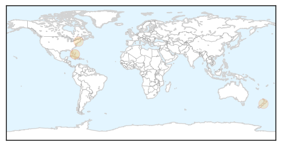

Hepatitis
30-Day Web Trend
1 alerts, 1 warnings

30-Day Twitter Trend
0 alerts, 0 warnings

Article Locations
Article Confidences
Top Articles:
Top Tweets:
-
No tweets found for Mar 14, 2014
Measles
30-Day Web Trend
3 alerts, 9 warnings

30-Day Twitter Trend
0 alerts, 0 warnings

Article Locations

Article Confidences

Top Articles:
- 0.996
- Fraser Health warns of spread of measles in public in Chilliwack and Agassiz
- 0.976
- 100 measles cases reported in Fraser Valley outbreak
- 0.946
- Measles outbreak has spread from Chilliwack, B.C. school into general population, Fraser Health officials say
- 0.932
- New York City Measles Outbreak 2014
- 0.834
- Thanks, Anti-Vaxxers. You Just Brought Back Measles in NYC.
- 0.814
- Memo to anti-vaxxers: There's an outbreak of measles in NYC right now.
- 0.528
- A Disaster In Waiting
Top Tweets:
-
No tweets found for Mar 14, 2014